สารบัญ / Table of Contents
1
ภาพรวมระบบ System Overview
3
2
การสมัครสมาชิก Register
4
3
การเข้าสู่ระบบ Login
5
4
การจัดการ Master Data Master Data Management
6
5
การสร้าง Work Order Creating a Work Order
11
6
การมอบหมายช่าง Assigning Technicians
13
7
การอัปเดตสถานะงาน (ช่าง) Technician — Update Work Status
15
8
สถานะ Work Order ทั้งหมด Work Order Status Reference
17
ภาษาไทย
Field Service Management System (FSM) คือระบบจัดการงานภาคสนามที่ช่วยให้องค์กรสามารถ
บริหารจัดการ ลูกค้า, สถานที่, ทรัพย์สิน, ช่าง และ ใบสั่งงาน (Work Order)
ได้อย่างมีประสิทธิภาพ ระบบรองรับผู้ใช้งาน 2 บทบาทหลัก ได้แก่
ผู้ดูแลระบบ (Admin) และ ช่างเทคนิค (Technician)
English
The Field Service Management System (FSM) helps organizations efficiently manage
customers, sites, assets, technicians, and work orders.
The system supports two primary roles: Administrator (Admin)
and Technician.
| บทบาทและสิทธิ์ / Roles & Permissions |
|---|
| Admin | จัดการข้อมูลทั้งหมด, สร้างและมอบหมายงาน |
| Technician | ดูงานที่ได้รับมอบหมาย, อัปเดตสถานะ |
| URL |
|---|
| ระบบ | field-service-management-ui.vercel.app |
| Browser | Chrome / Edge (แนะนำ) |
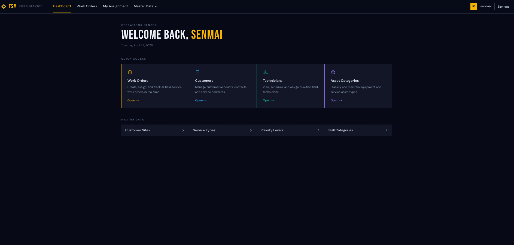
ภาษาไทย
การสมัครสมาชิกใช้สำหรับสร้างบัญชีผู้ใช้ใหม่ในระบบ ผู้ใช้ที่สมัครจะได้รับสิทธิ์เข้าถึงระบบ
และสามารถถูกแต่งตั้งเป็นช่างเทคนิคได้ในภายหลัง
English
Registration creates a new user account. After registering, the account can be linked
to a Technician profile by an Admin.
1
ไปที่ URL ระบบ แล้วคลิก "Register" ที่ด้านล่างของหน้า Login
Go to the system URL and click "Register" below the login form.
2
กรอก Username, Email และ Password
Fill in your Username, Email, and Password.
3
คลิก "Register" ระบบจะสร้างบัญชีและ Redirect ไปหน้าหลักอัตโนมัติ
Click "Register". The system will create your account and redirect to the dashboard.
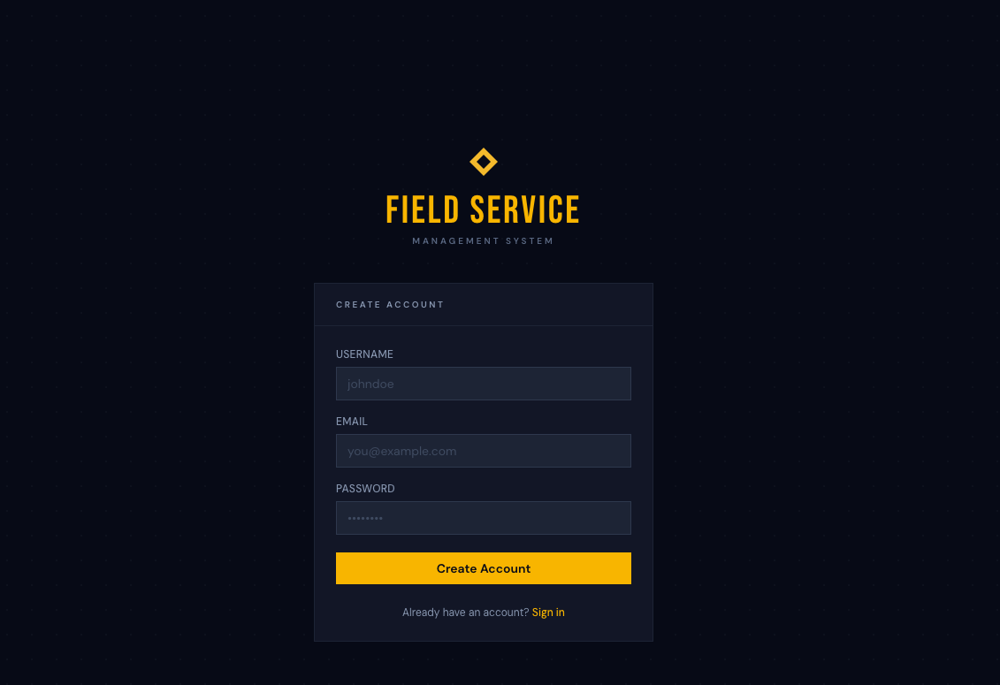
⚠️ หมายเหตุ / Note: Email แต่ละ Address ใช้ได้เพียงครั้งเดียว หากพบว่า Email ซ้ำระบบจะแจ้งเตือน
Each email address can only be registered once. Duplicate emails will be rejected.
ภาษาไทย
หลังจากสมัครสมาชิกแล้ว ให้ใช้ Email และ Password เข้าสู่ระบบ
ระบบจะจำ Session ไว้จนกว่าจะไม่มีการใช้งานเกิน 2 ชั่วโมง หรือปิด Browser
English
Use your Email and Password to sign in. The session remains active until
2 hours of inactivity or the browser is closed.
1
กรอก Email และ Password ในฟอร์ม Login
Enter your Email and Password in the login form.
2
คลิก "Sign In"
Click "Sign In".
3
ระบบจะ Redirect ไปหน้าหลักโดยอัตโนมัติ
The system will redirect you to the main dashboard automatically.
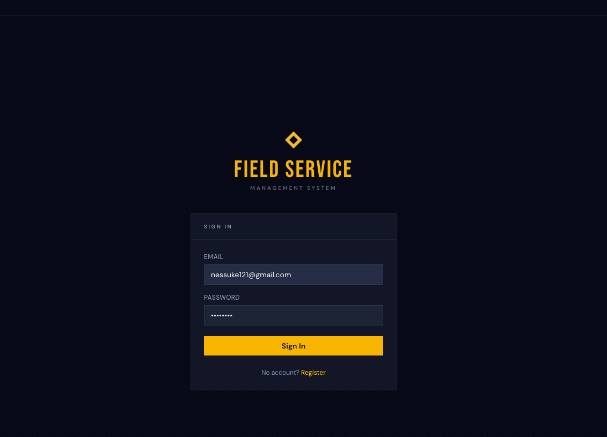
💡 เคล็ดลับ / Tip: หากเซสชั่นหมดอายุ ระบบจะพาไปหน้า Login อัตโนมัติ สามารถ Login ใหม่ได้ทันที
If your session expires, the system will redirect to the login page automatically.
ภาษาไทย
Master Data คือข้อมูลพื้นฐานของระบบที่ต้องตั้งค่าก่อนเริ่มใช้งาน ประกอบด้วย
ข้อมูลลูกค้า, สถานที่, ทรัพย์สิน, ช่างเทคนิค และข้อมูลอ้างอิงต่างๆ
English
Master Data contains the foundational records that must be configured before using the system,
including customers, sites, assets, technicians, and reference data.
📋 แนะนำลำดับการตั้งค่า / Recommended Setup Order:
ประเภทบริการ → ระดับความสำคัญ → ประเภทอุปกรณ์ → ลูกค้า → สถานที่ → ช่าง → อุปกรณ์
Service Types → Priority Levels → Asset Categories → Customers → Sites → Technicians → Assets
4.1 ลูกค้า / Customers
ภาษาไทย
ไปที่เมนู Master → Customers เพื่อเพิ่ม แก้ไข หรือลบข้อมูลลูกค้า ข้อมูลที่จำเป็น ได้แก่ ชื่อลูกค้า
English
Navigate to Master → Customers to add, edit, or remove customers. The customer name is required.
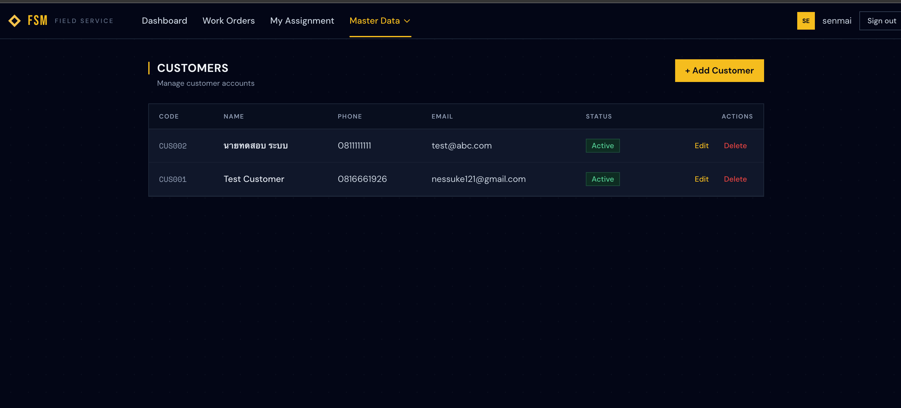
4.2 สถานที่ลูกค้า / Customer Sites
ภาษาไทย
ไปที่ Master → Customer Sites เพื่อเพิ่มสาขาหรือสถานที่ของลูกค้า แต่ละสถานที่สามารถระบุตำแหน่งบนแผนที่ได้ โดยคลิกบนแผนที่ หรือค้นหาชื่อสถานที่ หรือใช้ปุ่ม "📍 ฉัน" เพื่อใช้ตำแหน่งปัจจุบัน
English
Go to Master → Customer Sites to add branches or locations for each customer. You can set a map location by clicking on the map, searching for a place, or clicking "📍 Me" to use your current location.
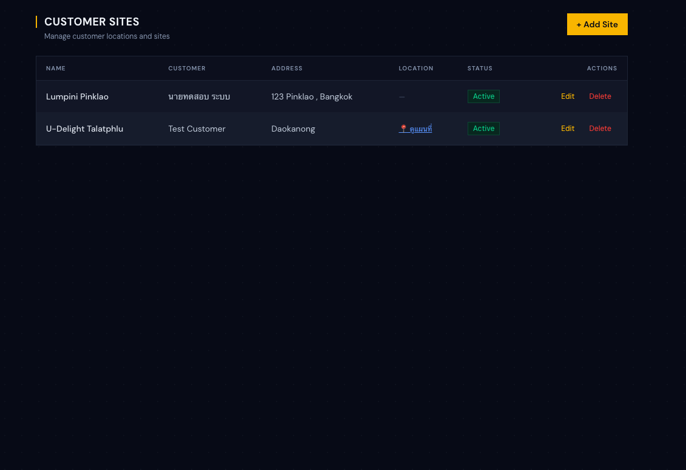
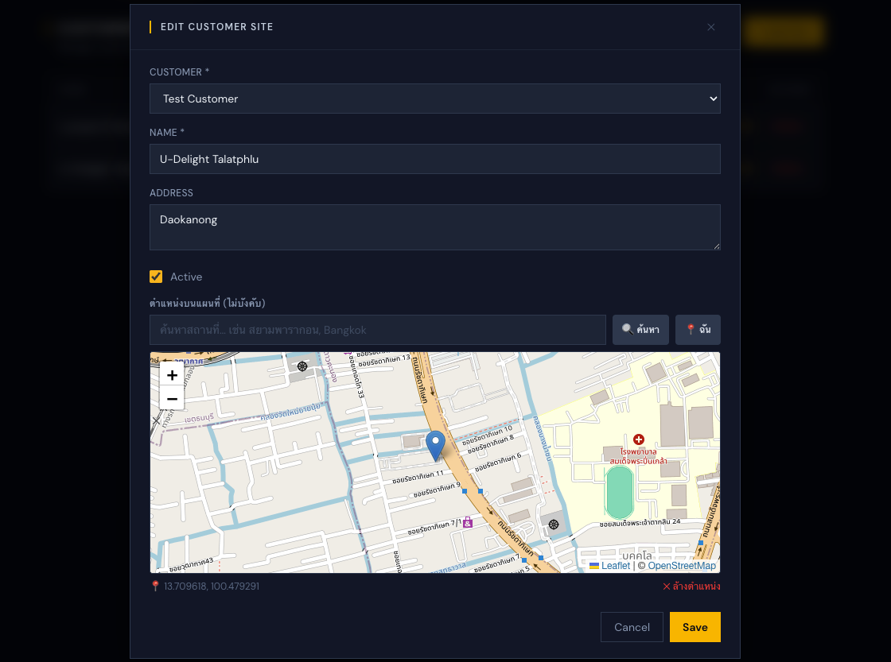
4.3 ช่างเทคนิค / Technicians
ภาษาไทย
ไปที่ Master → Technicians เพื่อเพิ่มข้อมูลช่าง
สำคัญ: ต้องผูก System User ให้กับช่างเพื่อให้ช่างสามารถ Login และดูงานของตัวเองได้
โดยเลือก User จาก Dropdown "System User (Login Account)"
English
Go to Master → Technicians to manage technician profiles.
Important: you must link a System User to each technician so they can log in and view their assigned work orders.
Select the user from the "System User (Login Account)" dropdown.
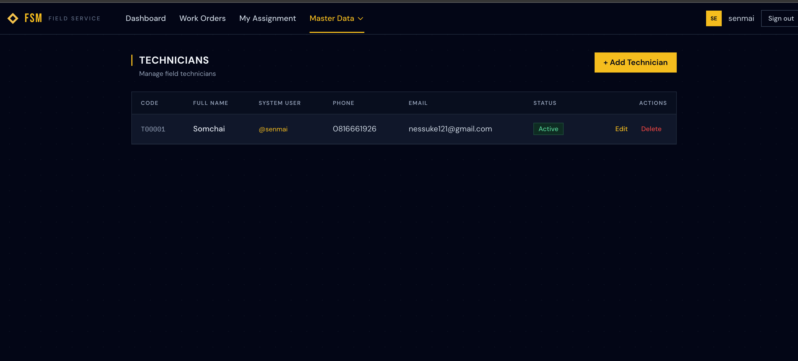
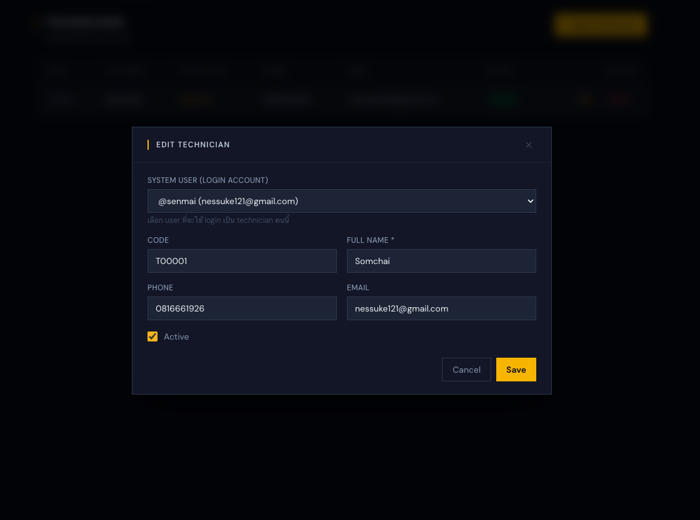
4.4 อุปกรณ์ / Assets
ภาษาไทย
ไปที่ Master → Assets เพื่อลงทะเบียนอุปกรณ์หรือสิ่งของที่ต้องการจัดการ
แต่ละ Asset ผูกกับสถานที่ลูกค้า และสามารถระบุวันหมดประกัน ยี่ห้อ รุ่น และตำแหน่งบนแผนที่ได้
English
Go to Master → Assets to register equipment or devices.
Each asset is linked to a customer site and can include warranty expiry date, brand, model, and map location.
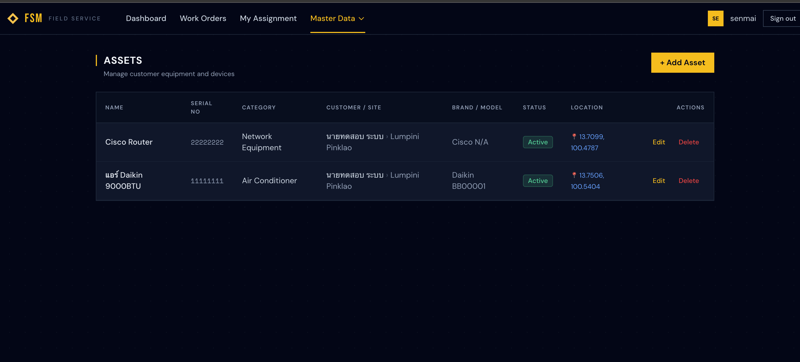
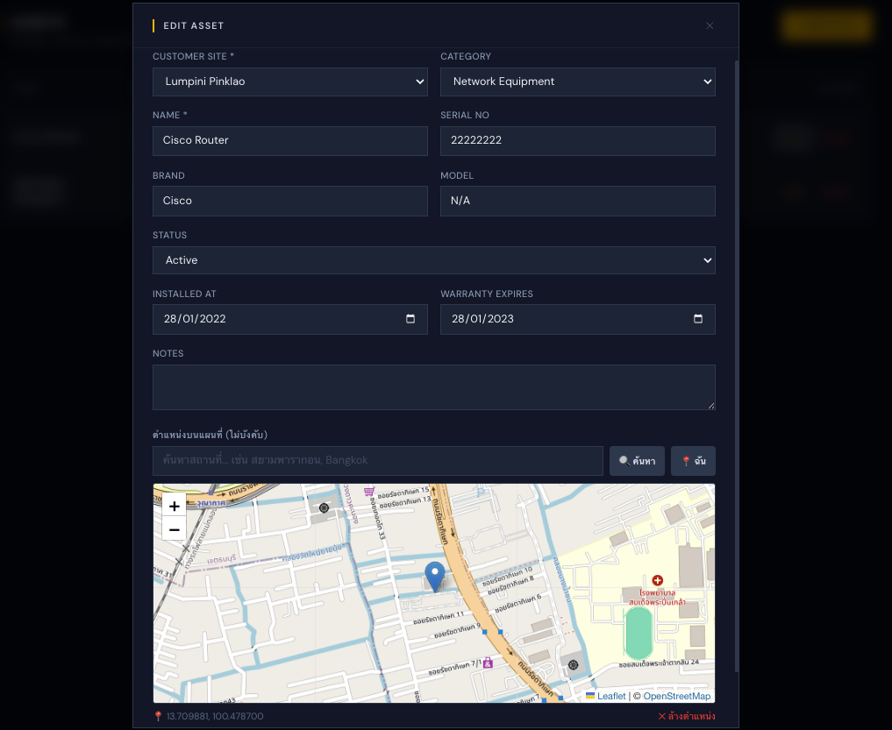
4.5 ข้อมูลอ้างอิง / Reference Data
| เมนู / Menu |
คำอธิบาย / Description |
ตัวอย่าง / Example |
| Service Types |
ประเภทงานบริการ / Types of service |
ซ่อมบำรุง, ติดตั้ง, ตรวจสอบ |
| Priority Levels |
ระดับความเร่งด่วน / Urgency levels |
Critical, High, Medium, Low |
| Asset Categories |
ประเภทอุปกรณ์ / Equipment categories |
เครื่องปรับอากาศ, ลิฟต์, ไฟฟ้า |
| Skill Categories |
ทักษะช่าง / Technician skill types |
ระบบไฟฟ้า, ระบบน้ำ, HVAC |
ภาษาไทย
หลังจากสร้าง Work Order แล้ว ระบบจะแสดงส่วน Assignment โดยอัตโนมัติ
สามารถมอบหมายช่างได้หลายคน และกำหนดให้คนหนึ่งเป็น หัวหน้างาน (Lead) ได้
English
After creating a Work Order, the assignment panel appears automatically.
Multiple technicians can be assigned, with one designated as the Lead.
1
หลังบันทึก Work Order จะเห็นส่วน "Technicians (ผู้รับผิดชอบ)" ด้านล่าง
After saving, the "Technicians" assignment section appears below.
2
เลือกช่างจาก Dropdown แล้วเลือก checkbox "Lead" หากต้องการให้เป็นหัวหน้า
Select a technician from the dropdown. Check "Lead" to designate as team lead.
3
คลิก "+ Assign" เพื่อยืนยันการมอบหมาย สถานะ Work Order จะเปลี่ยนเป็น Assigned อัตโนมัติ
Click "+ Assign". The Work Order status changes to Assigned automatically.
4
สามารถเพิ่มช่างได้หลายคนด้วยวิธีเดียวกัน หรือลบออกโดยคลิก "✕ Remove"
Add multiple technicians the same way, or remove one by clicking "✕ Remove".
5
คลิก "Done" เพื่อปิดหน้าต่าง
Click "Done" to close the panel.
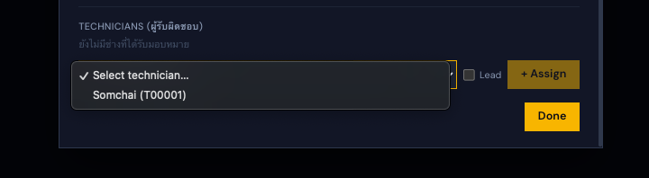
ℹ️ Lead Technician: ช่างที่ถูกกำหนดเป็น Lead จะแสดงป้าย "Lead" สีทอง
และระบบจะตั้ง Lead ใหม่อัตโนมัติหากมีการเปลี่ยนแปลง
The Lead technician is shown with a gold "Lead" badge. The system auto-updates when changed.
ภาษาไทย
ช่างสามารถดูงานที่ได้รับมอบหมายและอัปเดตสถานะงานได้จากเมนู My Assignment
โดยระบบจะแสดงเฉพาะงานที่ถูก Assign ให้กับบัญชีนี้เท่านั้น
English
Technicians can view their assigned work orders and update status from the My Assignment menu.
Only work orders assigned to the logged-in technician are shown.
⚠️ ข้อกำหนด / Requirement: บัญชีผู้ใช้ต้องถูกผูกกับข้อมูลช่างก่อน (ดู Section 4.3)
The user account must be linked to a Technician profile first (see Section 4.3).
ขั้นตอนการอัปเดตสถานะ / Status Update Steps
1
Login ด้วยบัญชีช่าง แล้วไปที่เมนู My Assignment
Log in with the technician account and go to My Assignment.
2
เลือกงานที่ต้องการอัปเดต จะเห็น Card แสดงข้อมูลงาน พร้อม เวลาเริ่มจริง และ เวลาสิ้นสุดจริง
Find the work order to update. Each card shows the job details along with Actual Start and Actual End time fields.
3
ตรวจสอบหรือแก้ไข เวลาเริ่มต้น/สิ้นสุดจริง (ระบบ default ค่าจากเวลาที่นัดหมายไว้)
Review or edit the Actual Start/End times (pre-filled from scheduled times).
4
คลิกปุ่มตามสถานะที่ต้องการ:
Click the appropriate status button:
▶ เริ่มงาน
⏸ พักงาน
✅ เสร็จแล้ว
▶ กลับมาทำงาน
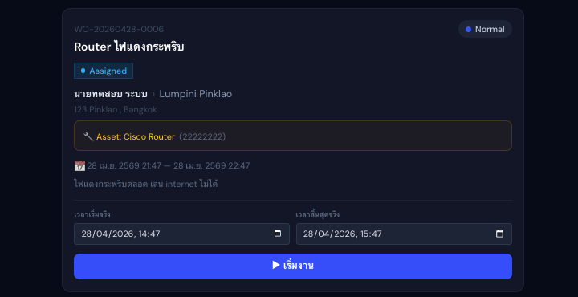
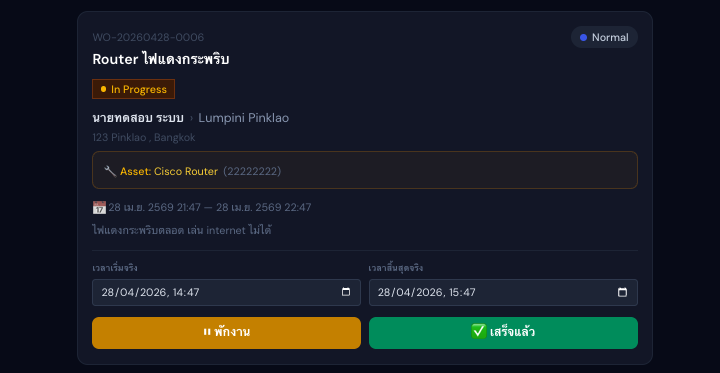
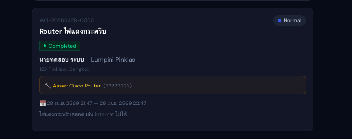